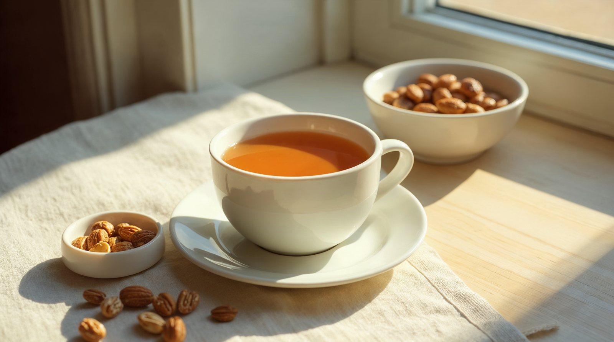

이종호 한의사 감수좋은꿈참사랑한의원 대표원장 (한의사 면허번호 19769)발행 2026-11-26 · 수정 2026-11-26
이 글의 차례
달력 앱을 열어 보다가 손가락이 멈춥니다. 이번 달 초에 한 번, 같은 달 끝 무렵에 또 한 번. 분명 생리가 끝난 지 얼마 안 된 것 같은데 속옷에 다시 피가 비칩니다. '이번 달은 왜 두 번이지. 몸에 무슨 일이 생긴 걸까.' 진료실에서 이런 이야기를 꺼내시는 분이 생각보다 많습니다.
한 달에 두 번 생리를 하면 몸도 마음도 지칩니다. 생리대를 챙기는 일이 잦아지고, 생리 전의 붓기와 예민함이 가시기도 전에 다음 생리가 찾아옵니다. 무엇보다 '이게 괜찮은 걸까' 하는 걱정이 머릿속을 떠나지 않습니다.
먼저 안심하실 말씀부터 드리면, 생리 주기는 사람마다 꽤 넓게 다릅니다. 보통 스물하루에서 서른다섯 날 사이를 흔한 범위로 보는데, 이 범위 안에서 짧은 편인 분은 달력상 한 달에 두 번 생리가 들어가는 일이 생길 수 있습니다. 반대로 주기가 그보다 짧아지기 시작했다면 살펴볼 이유가 생깁니다.
그래서 저는 '두 번 했다'는 사실보다 생리 첫날과 다음 생리 첫날 사이가 며칠인지를 먼저 여쭙니다. 그 숫자 하나가 이야기의 방향을 정합니다. 그리고 그 피가 정말 생리인지, 생리 사이에 비치는 다른 출혈인지도 함께 나눠 봅니다.
빈발월경은 어떤 상태를 말하나요?
빈발월경은 생리 주기, 그러니까 이번 생리 첫날부터 다음 생리 첫날까지가 스물하루보다 짧게 이어지는 상태를 말합니다. 어쩌다 한 번 짧아진 것이 아니라 몇 달째 짧은 주기가 되풀이될 때 이 이름을 붙입니다.
주기가 스무 날 남짓이라면 한 달 안에 생리가 두 번 들어가는 일이 자주 생깁니다. 생리 기간이 대엿새라면 생리가 끝나고 보름도 안 되어 다시 시작하는 셈이어서, 몸이 쉴 틈이 없다고 느끼시는 것도 무리가 아닙니다.
여기서 하나 구분하셔야 할 것이 있습니다. 달력상 한 달에 두 번이어도 주기가 스물사흘, 스물닷새처럼 흔한 범위 안에 있다면 빈발월경이라고 하지 않습니다. 달의 길이와 생리 주기가 맞지 않아 그렇게 보일 뿐입니다. 그래서 날짜를 세어 보는 일이 첫걸음입니다.
생리일까요, 생리 사이 출혈일까요
두 번째 피가 정말 생리인지 살펴보는 것도 중요합니다. 생리는 대개 처음 하루 이틀 양이 많다가 점점 줄고, 아랫배가 묵직하거나 허리가 뻐근한 느낌이 함께 오는 경우가 많습니다.
반면 생리 사이 출혈은 양이 적고 갈색이나 분홍빛으로 하루 이틀 비치다 마는 경우가 많습니다. 생리 중간쯤 배란 무렵에 잠깐 비치는 배란기 출혈도 있고, 원인을 따로 확인해야 하는 부정출혈도 있습니다. 성관계 뒤에 피가 비치는 경우도 따로 말씀해 주셔야 합니다.
겉으로는 비슷해 보여도 생리 사이 출혈은 자궁경부나 자궁내막의 변화, 용종 같은 원인을 확인해야 할 때가 있습니다. 그래서 '생리를 두 번 한다'고 느껴지신다면 산부인과에서 한 번은 확인을 받아 보시길 권합니다. 확인을 받고 나면 마음도 한결 가벼워집니다.
왜 생리 주기가 짧아질까요
생리 주기는 뇌와 난소, 자궁이 주고받는 호르몬 신호로 정해집니다. 배란이 일어나기까지의 시간이 짧아지거나, 배란 뒤 자궁내막을 붙잡아 두는 시간이 짧아지면 주기 전체가 짧아집니다. 흔히 보이는 이유는 다음과 같습니다.
- 생리를 시작한 지 얼마 안 된 시기나 40대처럼 호르몬 리듬이 바뀌는 시기
- 큰 스트레스, 밤샘, 교대 근무로 잠의 리듬이 흔들린 경우
- 짧은 기간에 체중이 크게 늘거나 줄어든 경우
- 갑상선 기능의 변화
- 자궁근종이나 자궁내막 용종 같은 자궁의 변화
- 피임약이나 호르몬제를 시작하거나 끊은 뒤
이 가운데 40대 무렵의 변화는 자주 만납니다. 폐경으로 가는 길목에서는 주기가 길어지기 전에 오히려 짧아지는 시기를 먼저 거치는 분이 많습니다. 몸이 리듬을 새로 맞추는 과정일 수 있지만, 자궁의 다른 변화와 겹치지 않았는지 확인해 두는 것이 좋습니다.
한의학에서는 주기가 앞당겨지는 것을 몸에 열이 쌓이거나, 기운이 지쳐 피를 붙잡아 두는 힘이 약해진 모습으로 설명하기도 합니다. 얼굴로 열이 오르고 입이 마르는 분과, 늘 기운이 없고 쉽게 지치는 분은 같은 빈발월경이어도 살펴볼 부분이 다릅니다.
생리가 잦아지면 몸에는 어떤 일이 생기나요?
주기가 짧으면 한 해 동안 피를 흘리는 날이 늘어납니다. 양이 많지 않더라도 이런 시간이 이어지면 철분이 모자라 쉽게 지치고, 계단에서 숨이 차거나 어지러운 느낌이 생길 수 있습니다. 손톱이 잘 부러지거나 얼굴이 창백해 보인다는 말을 듣기도 합니다.
생리 전 불편도 자주 찾아옵니다. 붓기, 가슴 통증, 예민함, 단 음식 당김 같은 생리 전의 변화가 한 달에 두 번 가까이 오면 일상이 늘 생리를 중심으로 돌아가는 기분이 듭니다. 마음이 지치는 것도 그래서입니다.
임신을 준비하시는 분이라면 주기가 짧은 것이 배란과 착상에 어떤 영향을 주는지 궁금해하십니다. 이런 경우에는 산부인과에서 배란 여부와 호르몬 상태를 확인하시고, 한의원에서는 잠과 몸의 온기, 피로처럼 생활 쪽 바탕을 함께 살피는 방식으로 나란히 가시길 권합니다.
비슷해 보이지만 다른 경우
생리 기간이 열흘 가까이 길게 이어지는 경우는 빈발월경과 다릅니다. 주기는 흔한 범위인데 생리가 길게 끌리는 것이어서, 끝 무렵 갈색 피가 오래 비치는 모습으로 나타나곤 합니다. 이 경우에는 살펴볼 방향이 조금 달라집니다.
생리 양이 지나치게 많은 월경과다도 따로 봅니다. 주기는 괜찮은데 한 번 할 때의 양이 많아 밤에 깨서 생리대를 갈아야 하는 경우입니다. 실제로는 주기도 짧고 양도 많은 분이 계셔서, 두 가지를 함께 여쭙습니다.
주기가 들쭉날쭉해서 어떤 달은 짧고 어떤 달은 긴 경우는 생리불순으로 넓게 봅니다. 짧은 주기만 꾸준히 되풀이되는지, 짧았다 길었다 하는지에 따라 확인할 검사와 생활에서 살필 부분이 달라집니다.
나이와 시기에 따라 달라지는 짧은 주기
생리를 시작한 지 몇 해 되지 않은 시기에는 배란이 아직 규칙적으로 자리 잡지 않아 주기가 짧았다 길었다 하는 경우가 흔합니다. 이 시기의 짧은 주기는 몸이 리듬을 익혀 가는 과정일 때가 많아서, 양과 피로를 함께 보며 지켜보는 경우가 많습니다. 다만 양이 많아 학교생활이 힘들 정도라면 확인을 받아 보시는 것이 좋습니다.
출산 뒤나 수유를 마친 뒤에도 주기가 한동안 흔들립니다. 몸이 임신 전의 리듬을 되찾는 데 몇 달이 걸리기도 해서, 그 사이 짧은 주기가 몇 번 이어질 수 있습니다. 잠이 모자라고 끼니가 불규칙한 시기와 겹치면 더 그렇습니다.
30대 후반부터 40대에는 앞서 말씀드린 것처럼 주기가 짧아지는 변화가 서서히 찾아오기도 합니다. 예전보다 생리가 며칠씩 앞당겨 온다고 느끼신다면, 그 흐름을 기록해 두시고 정기 검진 때 산부인과에서 함께 상의해 보세요.
먼저 이렇게 여쭙니다
처음 오시면 저는 대략 이런 순서로 여쭙니다. 미리 생각해 오시면 이야기가 훨씬 수월해집니다.
- 최근 서너 달 생리 시작일은 언제였나요?
- 생리는 며칠 동안 하고, 양이 가장 많은 날은 생리대를 몇 번 바꾸시나요?
- 생리가 아닌 때에 피가 비치거나, 성관계 뒤 피가 비친 적이 있나요?
- 최근 잠, 일, 체중에 큰 변화가 있었나요?
- 쉽게 지치거나 어지럽고, 계단에서 숨이 차지는 않나요?
- 피임약, 호르몬제, 갑상선 약처럼 드시는 약이 있나요?
모든 질문에 정확히 답하지 못하셔도 괜찮습니다. 달력에 생리 시작일만 적혀 있어도 이야기의 절반은 시작된 셈입니다.
임신 가능성이 있는지도 여쭙니다. 초기 임신 때 비치는 피를 생리로 여기는 경우도 있어서, 가능성이 조금이라도 있다면 진료 전에 알려 주시고 산부인과에서 확인을 먼저 받으시도록 안내합니다.

일상에서 먼저 해 볼 수 있는 것
주기를 바로 바꿀 수는 없지만, 주기를 흔드는 생활 쪽 요인은 조금씩 줄여 볼 수 있습니다. 한꺼번에 여러 가지를 바꾸려 하기보다 하나를 골라 몇 주 이어 가시면 됩니다.
- 잠드는 시각과 깨는 시각을 일주일만이라도 비슷하게 맞추기
- 끼니를 거르지 않고, 고기·생선·달걀·두부 같은 단백질을 끼니마다 조금씩 챙기기
- 짧은 기간에 체중을 크게 줄이는 식사는 피하기
- 아랫배와 허리를 차게 두지 않기
- 생리 기간과 그 직후에는 무리한 운동이나 밤샘을 줄이기
- 카페인과 술은 마시는 날의 횟수부터 줄이기
잠은 생리 리듬과 가깝습니다. 밤늦게까지 깨어 있는 날이 이어지면 호르몬 신호를 내는 뇌의 리듬도 함께 흔들릴 수 있습니다. 주기가 짧아진 시기와 바빠진 시기가 겹치는지 한 번 돌아보세요.
생리가 잦아 피를 자주 흘리신다면 철분이 든 음식을 의식해서 드시는 것이 좋습니다. 붉은 살코기, 조개류, 달걀노른자, 짙은 녹색 채소가 대표적입니다. 철분제를 드실지는 혈액 검사 결과를 보고 병원에서 상의하시면 됩니다.
마음이 쫓기는 시기라면 하루에 십 분이라도 몸을 느슨하게 하는 시간을 만들어 보세요. 따뜻한 물로 씻은 뒤 등을 대고 누워 숨을 길게 내쉬는 것만으로도 몸이 한결 풀리는 것을 느끼실 수 있습니다.
운동은 끊기보다 강도를 조절하는 쪽이 좋습니다. 숨이 약간 차되 옆 사람과 이야기할 수 있을 정도의 걷기나 가벼운 근력 운동은 잠과 기분을 돕고, 생리 리듬에도 좋은 바탕이 됩니다. 반대로 체중을 빨리 줄이려고 운동량을 갑자기 크게 늘리면 주기가 흔들릴 수 있습니다.
한의원에서 함께 살필 수 있는 경우
- 산부인과 확인을 받았고 특별한 원인은 없다고 들었지만 주기가 계속 짧은 경우
- 생리가 잦으면서 늘 피곤하고 손발이 차거나 쉽게 지치는 경우
- 얼굴로 열이 오르고 입이 마르며 잠이 얕은 경우
- 생리 전 붓기와 예민함이 한 달에 두 번 가까이 찾아와 힘든 경우
- 40대 무렵 주기가 짧아지면서 잠과 기분이 함께 흔들리는 경우
좋은꿈참사랑한의원에 오시면 먼저 아래 '먼저 확인이 필요한' 신호가 없는지부터 봅니다. 그다음 맥을 짚고 혀와 배를 살피며, 잠과 소화, 대소변, 손발과 아랫배의 온기를 여쭙습니다. 주기가 짧아진 시기와 생활의 변화가 겹치는지도 함께 찾아봅니다.
진찰한 내용을 바탕으로 생활에서 바꿔 볼 것 하나와 함께 침, 온열 관리, 한약 상담 가운데 지금 상태에 맞는 것을 정합니다. 한약을 상의할 때는 드시는 약을 모두 확인하고 신중하게 정합니다. 피임약이나 호르몬제처럼 병원에서 처방받은 약은 상의 없이 멈추지 않습니다.
한의원 진료는 산부인과 진료를 대신하는 것이 아니라 나란히 가는 것입니다. 산부인과에서 원인과 검사를 챙기고, 한의원에서는 그 사이의 잠과 피로, 몸의 온기를 함께 살핀다고 생각해 주시면 됩니다.
이렇게 기록해 오시면 상담이 쉬워집니다
생리 주기는 기억보다 기록이 훨씬 정확합니다. 두세 달만 간단히 적어 보세요.
- 생리 시작일과 끝난 날
- 양이 가장 많은 날 생리대를 바꾼 횟수
- 생리가 아닌 때 피가 비친 날과 색
- 잠든 시각과 깬 시각, 유난히 바빴던 주
- 피로, 어지럼, 붓기처럼 함께 온 불편
빠진 날이 있어도 괜찮습니다. 기록을 나란히 놓고 보면 주기가 짧아진 달과 생활 사이의 연결이 보이기 시작하고, 그것이 다음 걸음을 정하는 실마리가 됩니다.
내 몸의 달력을 알아 가는 일
한 달에 두 번 생리를 하면 내 몸이 고장 난 것 같다는 생각이 드실 수 있습니다. 하지만 주기가 짧아진 것은 몸이 지금의 생활과 시기에 맞춰 리듬을 바꾸고 있다는 신호일 때가 많습니다. 그 신호를 알아차리고 확인해 보려는 것만으로도 이미 첫걸음을 떼신 겁니다.
이번 달에는 생리 시작일을 적어 두는 것부터 해 보세요. 다음에 오시면 그 기록부터 함께 펼쳐 보겠습니다.
이런 증상은 먼저 확인이 필요합니다
- 피 양이 갑자기 크게 늘어 한두 시간마다 생리대가 흠뻑 젖거나 어지러워 쓰러질 것 같은 경우
- 임신 가능성이 있는데 피가 비치면서 아랫배가 한쪽으로 심하게 아픈 경우
이런 신호가 있으면 한의원보다 가까운 병원이나 응급실을 먼저 찾으세요.
함께 읽으면 좋은 글
- 월경 주기가 불규칙할 때 한의원에서는 무엇을 먼저 확인하나요?
- 생리가 아닌 때에 피가 비치는 부정출혈이 걱정될 때는 무엇부터 확인하나요?
- 배란통과 배란기 출혈, 생리 사이 아랫배 통증과 피 비침은 어떻게 살피나요?
- 생리 양이 너무 많을 때(월경과다)는 무엇을 확인하고 어떻게 살피나요?
- 40대 초반에 생리가 줄고 띄엄띄엄해져 이른 폐경이 걱정될 때는 무엇을 확인하나요?

여쭙는 것
- 최근 서너 달 생리 시작일은 언제였나요?
- 생리는 며칠 동안 하고, 양이 가장 많은 날은 생리대를 몇 번 바꾸시나요?
- 생리가 아닌 때에 피가 비치거나, 성관계 뒤 피가 비친 적이 있나요?
생활에서 해 볼 것
- 잠드는 시각과 깨는 시각을 일주일만이라도 비슷하게 맞추기
- 끼니를 거르지 않고, 고기·생선·달걀·두부 같은 단백질을 끼니마다 조금씩 챙기기
- 짧은 기간에 체중을 크게 줄이는 식사는 피하기
한의원에서 함께 살필 것
- 산부인과 확인을 받았고 특별한 원인은 없다고 들었지만 주기가 계속 짧은 경우
- 생리가 잦으면서 늘 피곤하고 손발이 차거나 쉽게 지치는 경우
- 얼굴로 열이 오르고 입이 마르며 잠이 얕은 경우
먼저 확인이 필요한 신호
- 피 양이 갑자기 크게 늘어 한두 시간마다 생리대가 흠뻑 젖거나 어지러워 쓰러질 것…
- 임신 가능성이 있는데 피가 비치면서 아랫배가 한쪽으로 심하게 아픈 경우
한눈에 보는 표
| 구분 | 핵심 |
|---|---|
| 여쭙는 것 | 최근 서너 달 생리 시작일은 언제였나요? 생리는 며칠 동안 하고, 양이 가장 많은 날은 생리대를 몇 번 바꾸시나요? |
| 생활에서 해 볼 것 | 잠드는 시각과 깨는 시각을 일주일만이라도 비슷하게 맞추기 끼니를 거르지 않고, 고기·생선·달걀·두부 같은 단백질을 끼니마다 조금씩 챙기기 |
| 한의원에서 함께 살필 것 | 산부인과 확인을 받았고 특별한 원인은 없다고 들었지만 주기가 계속 짧은 경우 생리가 잦으면서 늘 피곤하고 손발이 차거나 쉽게 지치는 경우 |
| 먼저 확인이 필요한 신호 | 피 양이 갑자기 크게 늘어 한두 시간마다 생리대가 흠뻑 젖거나 어지러워 쓰러질 것 같은 경우 임신 가능성이 있는데 피가 비치면서 아랫배가 한쪽으로 심하게 아픈 경우 |
자주 묻는 질문
한 달에 생리를 두 번 하면 빈발월경인가요?
날짜를 세어 봐야 합니다. 생리 첫날부터 다음 생리 첫날까지가 스물하루 이상이라면 달의 길이 때문에 두 번 들어간 것일 수 있습니다. 그보다 짧은 주기가 몇 달째 이어질 때 빈발월경으로 봅니다.
산부인과 검사를 먼저 받아야 하나요?
생리 사이 출혈인지, 자궁에 다른 변화가 있는지 확인하는 것이 먼저라서 산부인과 진료를 함께 권합니다. 결과지를 가져와 주시면 한의원 진료 방향을 정하는 데 도움이 됩니다.
피임약을 먹고 있는데 한약을 함께 먹어도 되나요?
드시는 약을 모두 확인하고 신중하게 정합니다. 약 이름을 알려 주시면 함께 살펴보고, 필요하면 처방한 선생님과 상의하시도록 안내합니다.
생리 중에도 침 치료를 받을 수 있나요?
대부분 받으실 수 있습니다. 생리 중이라는 것과 그날의 양, 몸 상태를 말씀해 주시면 그에 맞춰 자리와 자극을 정합니다.
주기가 짧은데 임신 준비를 해도 괜찮을까요?
산부인과에서 배란과 호르몬 상태를 확인하시는 것이 먼저입니다. 한의원에서는 잠과 몸의 온기, 피로처럼 생활 쪽 바탕을 함께 살피며 나란히 갑니다.
좋은꿈참사랑한의원은 재진 때 지난번 이야기부터 이어서 여쭙니다. 진료시간과 예약은 오시는 길에서 확인하세요.
어디서 상담받을 수 있나요?
좋은꿈참사랑한의원은 서울 동작구 만양로2길 2 신성빌딩 3층·5층(서울 동작구 상도동, 7호선 상도역 3번 출구 근처)에 있습니다. 한의사 3명(이종호 대표원장, 조영기 수석진료원장, 정원영 진료원장)이 진료합니다. 진료시간은 평일 09:30~20:00(점심 13:00~14:00), 토·일·공휴일 09:30~15:00이며, 방문 전 전화로 확인을 권합니다. 예약은 네이버 예약, 카카오톡 상담, 전화 02-815-7510로 받습니다.
이 글은 일반적인 건강 정보이며 개인의 진단이나 치료를 대신하지 않습니다. 증상이 있거나 복용 중인 약이 있다면 진료를 통해 확인하세요. 치료 효과는 개인마다 다를 수 있습니다.
작성 기준: 일반적으로 알려져 있는 건강 정보를 참고해 정리했습니다(대표원장 감수). 증상 기록은 1~2주 동안 하루 1회, 비슷한 시간에 적어 오시면 지난 상태와 비교하기 쉽습니다.